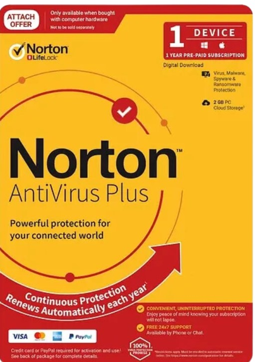

Phần Mềm Diệt Virus Tốt Nhất 2024
Giới thiệu
Trong thế giới số ngày càng phát triển, việc bảo vệ máy tính khỏi các mối đe dọa trực tuyến là vô cùng quan trọng. Một phần mềm diệt virus mạnh mẽ và đáng tin cậy là lá chắn đầu tiên của bạn. Bài viết này sẽ tổng hợp và so sánh những phần mềm diệt virus tốt nhất trong năm 2024, giúp bạn đưa ra lựa chọn phù hợp nhất.
1. Norton AntiVirus Plus
Norton luôn được đánh giá cao về khả năng phát hiện và loại bỏ các loại mã độc. Giao diện thân thiện và các tính năng bảo vệ bổ sung như tường lửa thông minh và trình quản lý mật khẩu là điểm cộng lớn. Norton phù hợp cho cả người dùng cá nhân và doanh nghiệp nhỏ.
- Bảo vệ chống virus, malware, spyware, ransomware.
- Tường lửa thông minh.
- Hỗ trợ khách hàng 24/7.
2. Bitdefender Antivirus Plus
Bitdefender nổi tiếng với công nghệ bảo vệ mạnh mẽ, hoạt động ngầm mà không làm chậm máy tính của bạn. Phần mềm này cung cấp nhiều tính năng tiên tiến và là một trong những lựa chọn tốt nhất về hiệu suất và khả năng bảo vệ.
- Chống ransomware đa lớp.
- Công nghệ chống lừa đảo (anti-phishing).
- Chế độ Autopilot tự động tối ưu hóa các thiết lập.
3. Kaspersky Anti-Virus
Kaspersky có lịch sử lâu đời và uy tín trong việc bảo vệ người dùng. Mặc dù có một số tranh cãi trong quá khứ, khả năng bảo vệ của Kaspersky vẫn được các tổ chức độc lập đánh giá rất cao. Gói cơ bản của họ cung cấp một lớp bảo vệ vững chắc với mức giá hợp lý.
- Phát hiện mối đe dọa theo thời gian thực.
- Quét và loại bỏ virus hiệu quả.
- Bảo vệ chống tấn công mạng.